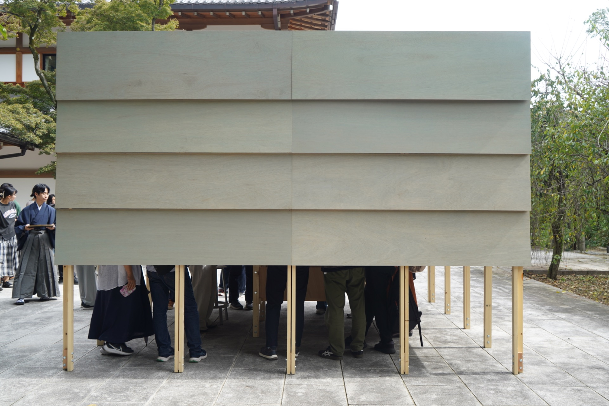
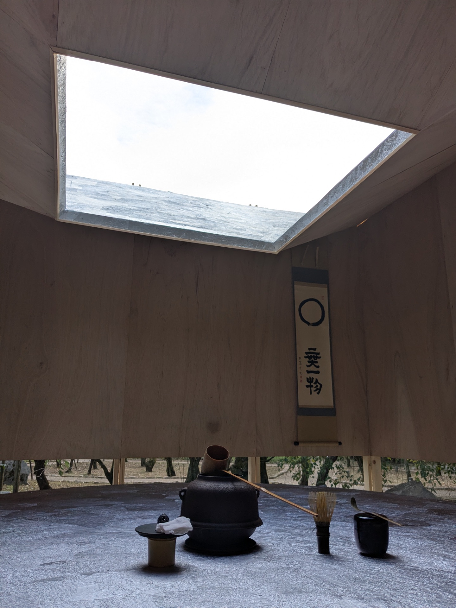
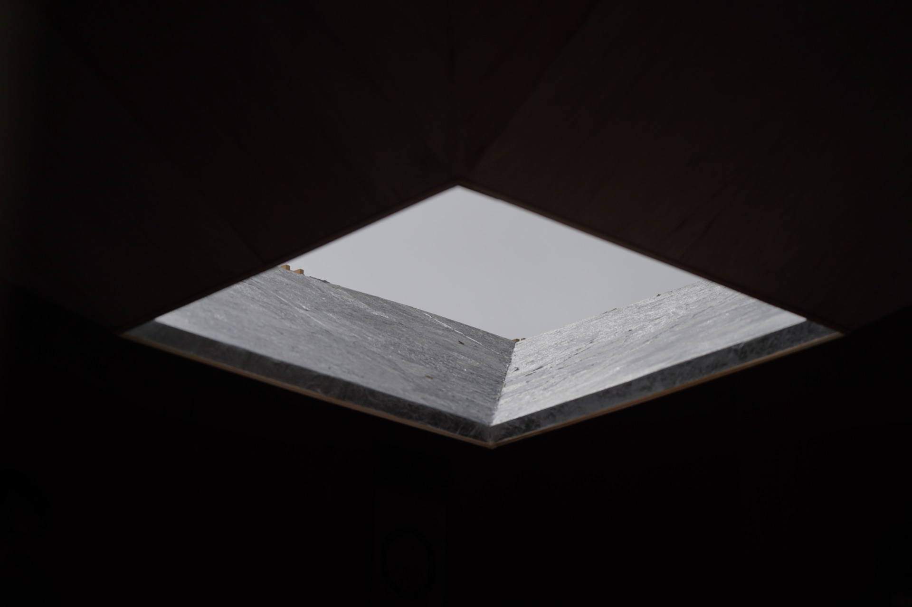

吉田泰星 インタビュー
凹庵について
田代：では、よろしくお願いします。
吉田：京都市立芸術大学、総合デザイン専攻修士で建築を学んでいます。吉田泰星です。よろしくお願いします。
田： まず、今回紹介してくれる作品について簡単に教えてください。
吉： 今回紹介するのは「凹庵」という作品です。約1年前の2025年10月に、北野天満宮に設置したお茶室です。 
この作品の背景には、大阪・関西万博の閉会式前後の3日間に、京都でも国際交流を目的としたお茶会のイベントを開催しようという企画がありました。そこで、私たちの研究室から誰かがお茶室を設計し、そこでお茶会を行うことになり、私が設計を担当しました。
作品の背景とコンセプト
田： まずは着想の段階について聞かせてください。どのようなことを考えながら、この建築を構想していったのでしょうか。アイデアが生まれた経緯も教えてください。
吉： まずは、お茶会そのものが現代においてどのようなあり方を持ち得るのか、というところから考えました。
背景として、万博という国際交流の場において、お茶というものがどのような役割を果たせるのかという問いがありました。日本文化の象徴として、単にキャッチーなものとして消費されるのではなく、お茶会の本質的な部分をどのように活用できるのかを考えていました。
もう一つは、北野天満宮で豊臣秀吉が開いた「北野大茶湯」というお茶会の歴史です。
北野大茶湯は、秀吉が天下統一を成し遂げた頃に開催されたもので、身分を問わず、庶民から武士、僧侶まで、お茶に関心のある人であれば誰でも参加できるというものでした。当時、異なる身分の人々が同じ場所に集まるというのは、非常に画期的なことだったと思います。
そうした歴史的な文脈も引き継ぎながら、今回のお茶室を提案しようと考えました。
田： 今回のお茶会には、さまざまな文化的背景を持つ外国の方々も参加します。スシやスキヤキのように、日本文化が表面的な部分だけで受け取られ、消費されるのではなく、お茶会という文化を持たない人たちや、日常的にお茶会に触れる機会の少ない現代の人たちと、その本質をどう共有していくかということですね。
もう一つは、北野大茶湯における身分の違いという文脈です。現代であれば、それは身分というよりも、文化やバックグラウンドの違いになると思います。そうした多種多様な人たちが、同じ時間と場所を共有できることがコンセプトになっているのでしょうか。
吉： はい、その通りです。
立ってお茶をいただくという提案
田： そうしたコンセプトから、どのように建築の形へと落とし込んでいったのでしょうか。
吉： 今回、私が提案したことの中で、特に大きなものは「立ってお茶をいただく」という形式です。
これは、明治時代に生まれた立礼式と、秀吉が開いた北野大茶湯における野点という、二つのお茶の文脈を自分なりに組み合わせたものです。
立礼式は、それまで床に座って行っていたお茶会に対して、椅子に座ってお茶をいただく形式です。明治時代に、海外の人や、床に座ることが難しい現代の人たちでも参加できるような形式として生まれました。
もう一つの野点は、屋外でピクニックのように気軽にお茶会をする形式です。誰でも気軽に参加したり、途中で抜けたりできるという特徴があります。
この二つを組み合わせて考えたとき、立礼式のように座ってお茶をいただく形式では、人の出入りが難しくなるのではないかと思いました。
そこで、あえて腰を下ろさず、立ったままお茶会をすることを提案しました。人がふらっと入ってきて、自由に出ていける。そうすることで、参加者がどのくらいの時間その場に滞在するのかということも、曖昧にしたかったのです。
田： つまり、かなり柔軟に建築空間を使っていくということですね。
そう考えると、外から足元だけが見える構造も面白いと思います。中にいる人数が変動していることを外から確認できますし、「まだ入れるかな」「今は少し混んでいるな」といったコミュニケーションも外側と取ることができます。
何より、中にいる人の個性が少しぼかされている。性別がなんとなく分かる程度で、顔や頭、身長といった情報は見えません。先ほど話していた秀吉の北野大茶湯の歴史や、異なる文化的背景を持つ人たちが同じ場所を共有するというコンセプトにも合っているように感じました。このあたりは意識して設計したのでしょうか。
吉： そうですね。特に視線についてはかなり意識していました。
お茶という文化には、気配を読み取るような側面があると思っています。例えば、扉を閉める音によって、言葉を交わさずに合図を送ることがあります。
人が入ってきたことを亭主が確認すると、あえて音を立てて躙り口の扉を閉める。あるいは、今ここに入っていいのかどうかを、言葉を交わさずに察する。
そうした、会話をしなくても気配を読み合いながらお茶会が進んでいくところに、茶室の美しさがあると思っています。
そのため、気配を読み合うような状況を意識して、下部の開口部をつくったり、天井の高さを操作したりしながら設計しました。
田： 建築のさまざまな要素によって、人の行為を誘発していくということですね。
吉： そうですね。この建築の参照元の一つに、大阪・関西万博の大屋根リングがあります。 
大屋根リングの素晴らしいところは、言語が必要ないということです。円という形は、万国共通で認識できるものです。言葉を必要としなくても、どのような目的で、どのように使うのかが非常に明確です。
私は、そうした形が持つ力を自分の建築にも取り入れようとしています。
この作品の大きな特徴の一つは、直径約1800mmの円形テーブルです。円形のテーブルは、自然と人がそれを囲む形になります。
人が自然と円をつくるような形になっているんです。そうした意図から、円卓を空間の中央に置くという構成にしています。
また、「凹庵」という名前の由来にも関係するのですが、中央部分は三角錐のような形状になっていて、くぼんでいます。
この形によって、自然と中央に視線が向かうようになっています。中央に光が入ることで、顔や視線が集まりやすくなる効果もあります。
さらに、エッジの部分は四畳半の畳の構成を参照しています。中央の開口部は正方形で、その正方形とエッジの関係によって、四畳半の畳による空間の分け方を天井にも表現しています。
こうした、形が持つ力を利用して、人が自然とその形を認識することで、行動が生まれるように設計しています。何かを強制しているわけではないけれど、自然とそうしたくなる。そういう計算は、かなり意識して行っています。
建築の色と空間の印象
田： そういう意味では、この壁の青緑色にも何かコンセプトがあるのでしょうか。
吉： これは、建築としては最後の遊びの部分に近いです。色自体は何色でもよかったのですが、一般的な茶室であれば、私が以前リメイクしたものも含めて、焦げ茶色などを使うと思います。
ただ、今回は暗い色にしたくありませんでした。イベントでキャッチーな印象を与えたいということもあり、北野天満宮の色から取ろうと考えました。
北野天満宮の門などには、銅が錆びてできた緑青色の部分があります。その色を自然の中に落とし込むことで、外から見たときにも印象に残るのではないかと考えました。
どちらかというと、イベントに向けた少し遊びのある色使いです。
田： でも、空間や周囲の環境と調和していることも大事ですよね。
吉： そうですね。
建築が人の行為を決めていく
田： もう少し踏み込んで聞きたいのですが、建築が人の行為や営みを誘発するということは、さまざまな場面で起こると思います。
実際に私もお茶会に参加しましたが、泰星が設計したこの空間は、何人でも入ることができ、どのタイミングからでも参加できるものでした。その結果、参加人数が随時変わっていくお茶会になっていました。
一方で、お茶を入れて運び、人に出すという作業を4、5人でひたすら往復するような、かなり慌ただしいお茶の提供方法になっていたようにも思います。
ただ、そうした状況も含めて、個人的にはとても面白いと感じました。建築によって、お茶の出し方そのものが少しずつ形づくられていく瞬間が面白かったんです。
今回のイベントは京都府立大学と京都市立芸術大学の合同で行われていたと思いますが、事前に何度も練習や打ち合わせを重ねたというよりは、ある程度決まっていない部分を残したまま当日を迎えたのではないでしょうか。
お茶をどう出すのか、お客さんをどう迎えるのかといったことが、まだ十分に決まっていない状態でイベントが始まった。そのため、お茶会をどのくらい形式に沿って行うのか、従来のお茶会の作法をどこまで踏襲するのかということも、明確に決まっていなかったように思います。
そうした状況の中で、建築が先に立ち上がっていたことによって、むしろ建築がお茶会のあり方を決めていったようにも感じました。そのあたりはどう考えていますか。
吉： 建築をつくる段階では、ある程度、人がどのように使うのかを予測していました。ただ、最後の部分については、当日に決められるようにしていました。
例えば、お茶会では、亭主が立つエリアとお客さんが使うエリアがあります。今回はそうした区分を畳によって示しています。
ある程度の使い方は想定しつつも、実際に使うときには臨機応変に変更できるように考えていました。
自身の建築について
田： なるほど。では、この作品に限らず、泰星自身の建築活動全体についても聞かせてください。
この作品では、空間を柔軟に使いながら、異なるバックグラウンドを持つ人たちが、それぞれの文化とお茶会というものを融合させたり、対話させたりしながら、同じ空間を共有していくことを目指していたと思います。
それをもう少し広げて、泰星の建築活動全体では、どのようなことを目指しているのでしょうか。ほかの作品も含めて、共通するコンセプトや方向性はありますか。
つまり、あなたはどういう建築家なのでしょうか。
吉： 難しいですね。これは最近考えていることでもあるのですが、自分の特徴の一つとして、実際の建築をつくる機会が多いということがあると思います。
一般的に建築学生は、課題文が与えられ、架空の敷地や設定に対して、空想上の建築を設計していくことが多いと思います。
一方で、私はありがたいことに、年に1つくらいのペースで建築を依頼され、実際につくる機会があります。
そうした中で、人がどのように使っていくのか、建築によって人との関係性やイベントなど、さまざまな文脈がどのように絡み合っていくのか。それを形として表現しているのかなと思います。
また、それは実際の空間におけるものです。
建築というものは、人間にとって非常に大きな存在ですが、私はそれよりも少し小さい、家具のようでもあり、建築のようでもあるものを扱っています。人が動かせるくらいの大きさのものを通して空間に関わっていることも、自分のアウトプットの特徴なのかなと思います。
田： なるほど。ありがとうございます。とても面白い話でした。
2026/11/14 
京都市立芸術大学大学院 総合デザイン専攻
2022 アートプログラム第一回テクノロジーと美が重なる時 最優秀賞
2025 京都市立芸術大学作品展 奨励賞
2026 京都市立芸術大学作品展 奨励賞
第六回日本和文化グランプリ 入選
2026年度グッドデザインニューホープ賞入選
2003年兵庫県生まれ、大阪育ち。2026年京都市立芸術大学美術学部デザイン科環境デザイン専攻を卒業。同年、京都市立芸術大学大学院美術研究科総合デザイン専攻に進学。
「人はどのように空間を感じ、空間はどのように生まれるのか」という問いを起点に、カタチや素材が人の身体や感覚にどのように作用するのかを探究している。建築を多様なスケールから捉え、特に1/1スケールの仮設建築を数多く実験的に制作することを通して、身体と空間の関係性を考察している。
代表作である茶室「凹庵」では、茶道に受け継がれてきた文化や所作の本質を現代的な視点から再解釈し、新たな茶会の形式を提案。人々の営みや関係性から空間のあり方を探り、そこに立ち現れる建築のかたちを考えている。